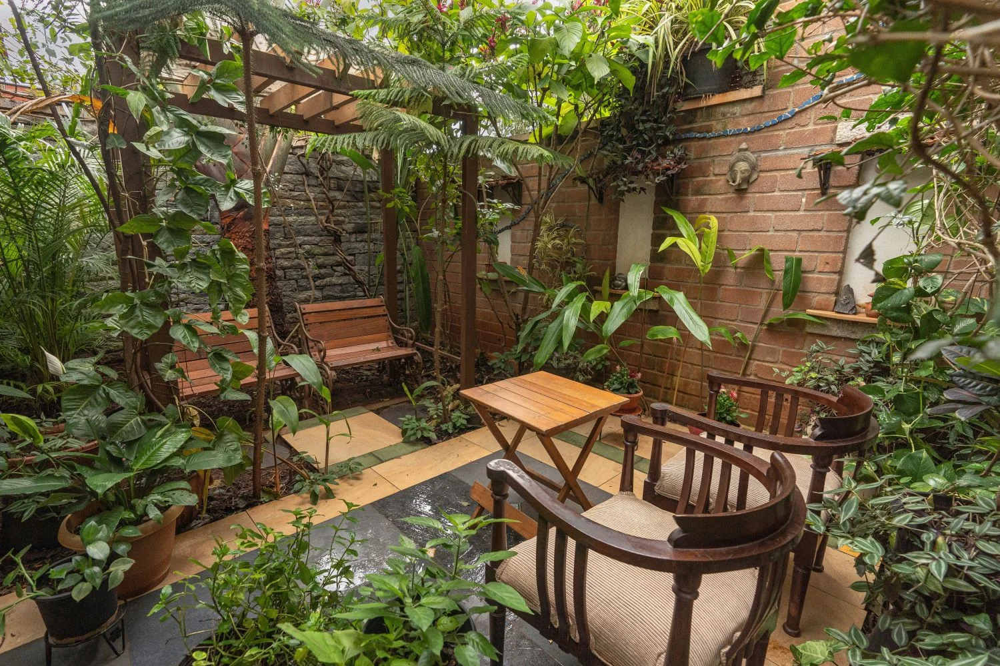

Climate Responsive DesignA good design is one that responds to the site and surroundings rather than a mandate approach on how a specific typology of building or space must be designed. The fascination for glass facades in India for commercial spaces started with the IT boom in the country. Aping the west, the commercial spaces today are sold out with concrete columns flanking the sides of glass walls.
However, in a tropical climate like ours, are these glazed buildings energy-efficient or even conducive to a productive work environment? Most often, the blinds are drawn to cut glare from the sun and AC is intensified to combat trapped heat. Then, where is the visual appeal or comfort offered by the building to the people utilising the space?
Thus, in this regard, it becomes crucial to explore the various vernaculars of a design that works towards reducing energy consumption with the use of natural resources and climate-responsive architecture, thereby creating a comfortable and healthy living space for occupants and the environment at large.
GoodEarth Tarana
Tarana is a commercial building with a built-up area of approximately 19,000 sq.ft designed to accommodate different businesses on three different levels. Using ‘Triskelion’, an ancient motif exhibiting a rotational symmetry with its interlocking arms as its crux, the design follows a pattern of moving outwards from its centre while remaining connected.
The ‘Triskelion’ motif is also interspersed in the space as a design narrative by using it as a pattern augmenting the wooden shutters or the frosted glass partition.
Natural light & ventilation
The central staircase with its simple helix continuous band also acts as an intermediate link in each floor space. Upon entering the Good Earth office, this staircase leads to an open lobby with a simple railing overlooking a courtyard below and is accentuated with a double-height vaulted ceiling that gives the space a sense of expansiveness and airiness.
The external walls are adorned with large, openable shutters, while vertical rectangular windows with fixed glass are provided where indirect light is needed. A special mention goes to the traditional wooden shutters found in each cabin that adds a sense of accessibility to visitors as well as ventilation.
Spill-out spaces like courtyards, balconies, and terraces are designed as an extension that brings in tranquillity. By overlooking nature, they create room for the employees to recharge with fresh ideas or relax in between work.
Skylights act as a tertiary source of light and also allow the hot air to escape. The dimensions are crucial to its integration since larger skylights heat a room while smaller ones are ineffective.
Passive cooling
Using passive cooling methods, there is no requirement for air conditioning in the office space at any given point of time of the year. A two feet wide cavity wall is used for the external walls on the upper floors to minimise heat radiation thereby decreasing the internal temperature. This also offshoots as storage for better utilisation of the space.
Having adequate tree cover comprising of native, hardy species that thrive well in the local climate keeps the building shaded and reduces heat absorption throughout the year.
Building materials
The materials used in a building are the key ingredients that articulate the space and the form. By adding colours and textures, they set the tone of the built space. When there are innumerable options available in the market, the key determining factors to choosing the right palette are minimal processing, renewability, durability, cost, and availability. Therefore, natural materials that are locally available and economical is the key to a functional and sustainable design.
Taking all of this matrix into consideration, the materials at Tarana showcase a wide range of natural materials with warm undertones:
- Walls – – By using the soil excavated from the site, the compressed stabilized bricks or CSBs are made using a manual machine with cement as a stabilizer; wire-cut bricks adorn the interior walls in most of the building giving it a rustic neat finish and locally sourced granite stone is used at the entryway leading to the outdoor patio.
- Doors, windows & partitions – – Although uPVC is the popular choice for commercial spaces, Tarana continues its narrative of old-world charm with the usage of Honne wood for most of the woodwork seen in the office space. Honne (or Merbau) wood is an affordable variant to Teak and is well suited to Bangalore’s climate with its high oil content.
- Paints and polishes – – The walls are finished with low VOC paints such as lime wash and water-based distemper which are economical. The external windows and doors are polished with a combination of cashew shell oil and linseed oil, to retain the natural look of the wood and ensure its durability.
Green roof
A green roof or a living roof is where the roof of a building is partly or wholly covered with vegetation. Even though intensive green roofs involve various construction technicalities, designing a terrace garden ambient to grow food crops or decorative plants can also be effective.
There are two terraces in Tarana that are well utilised. The main terrace with a kitchenette has a roof garden that insulates the top floor and is used for dining and gathering. Composting is an important practice here, which involves segregating food waste and then collecting it in earthen compost bins. The peripheral terrace is employed for growing organic vegetables that thrive in the native climatic conditions. The compound wall throughout has a planter where the plants form an effective screen and create a serene ambience.
Water management
The importance of water efficiency in the construction of green buildings lies in preserving the precious, limited resource of potable water and reducing carbon emissions in transport, disposal, and treatment of that water.
The Tarana office is a part of the expansive 50-acre Malhar Eco-Village and thus, is off-grid with its water supply from the municipality. The main sources of water supply here are the two borewells and rainwater.
- Bore well: the hard water is treated through a filtering and softening process and pumped through a hydro-pneumatic pressure pump.
- Rainwater: the collected water from all the roofs in the community drains via a system of gutters and pipes into a rainwater tank which is further pumped through a hydro-pneumatic pressure pump after filtration.
There are various aspects ingrained in the design that enables groundwater percolation and collection of rainwater through percolation pits, cement urns, the capture of roof rainwater, etc.
Sewage treatment
DEWATS (Decentralized wastewater treatment System) is used over the conventional STP for wastewater treatment as it is environmentally friendly and more economical.
Water Recycling: The water emerging from the Sewage treatment plant undergoes further treatment through an aeration tank and a series of carbon and sand filters which is then pumped back through a dual plumbing system used in toilet flushes.
Excess water is used in the landscape for irrigation which is managed through a system of drip lines and a series of sprinklers.
The choices we make today, impact our tomorrow. These conscientious vernaculars adapted in designing a sustainable, environment-friendly workspace at Tarana allow the building to breathe and be a wholesome work environment where the living and the built co-exist in harmony without overpowering one another. The biggest virtue of these elements listed in the blog is their replicability. These choices, if made consciously, can have a huge impact on the environment as a whole.